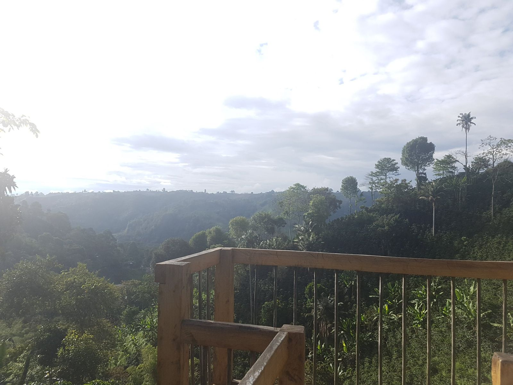
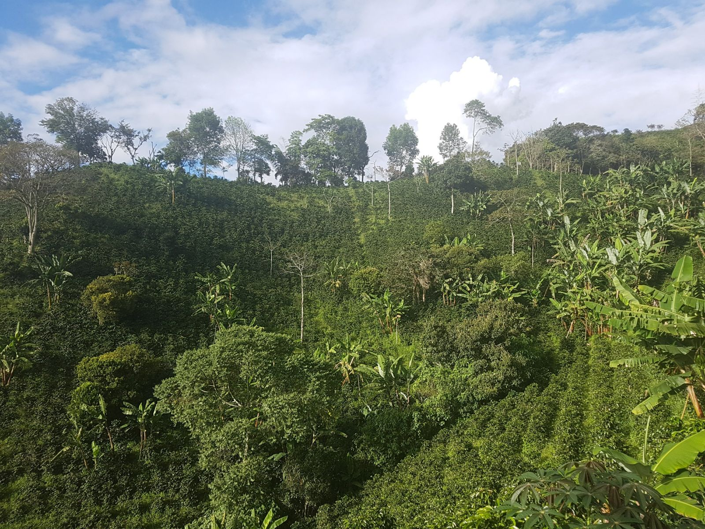
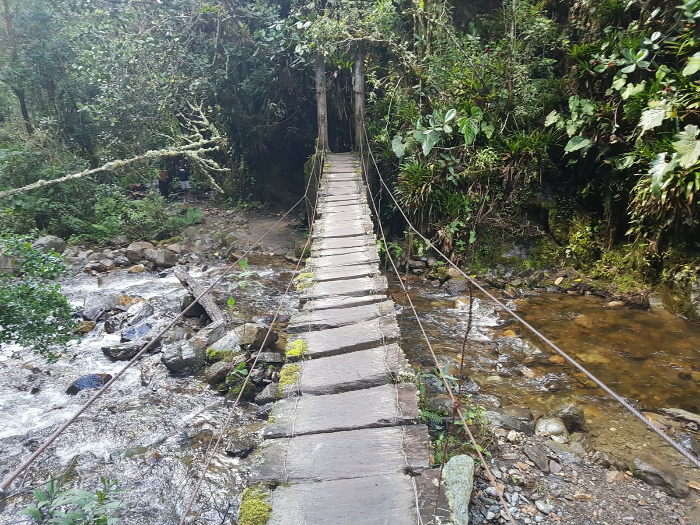
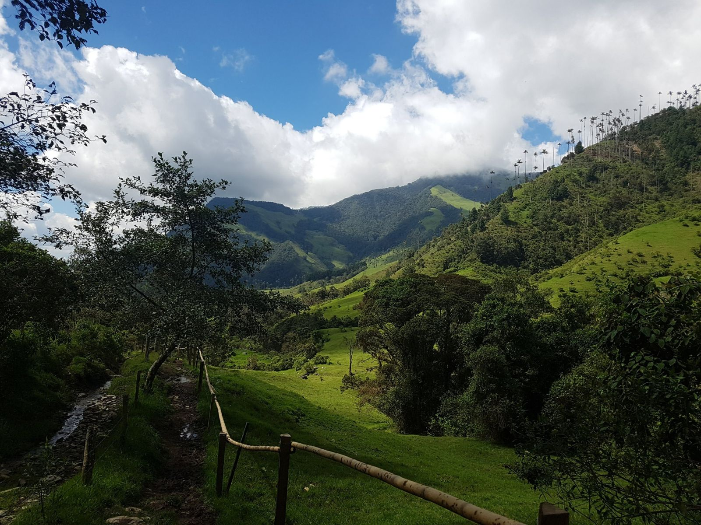
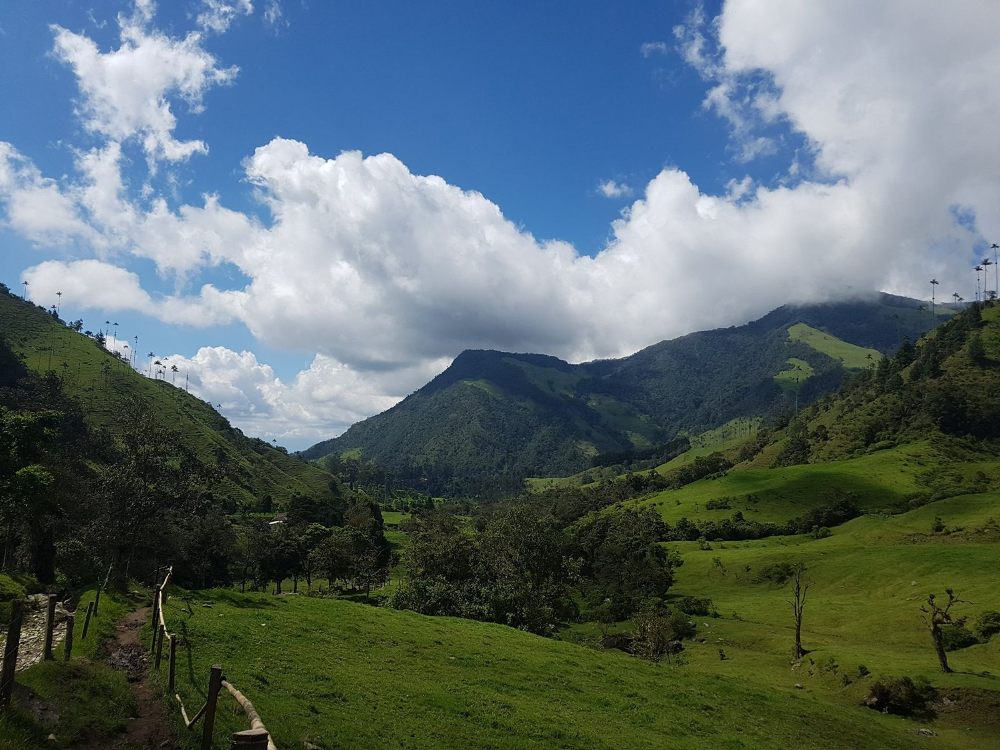
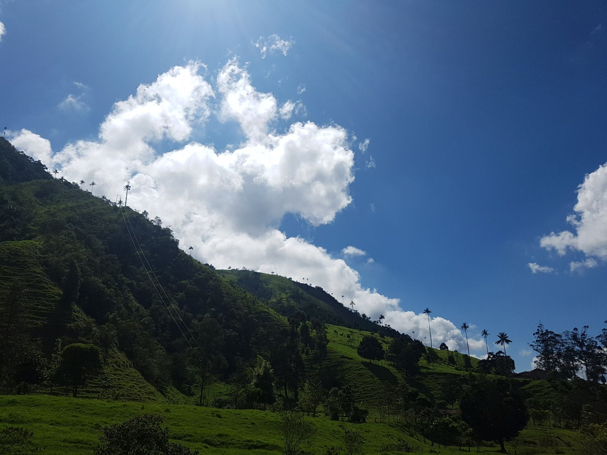
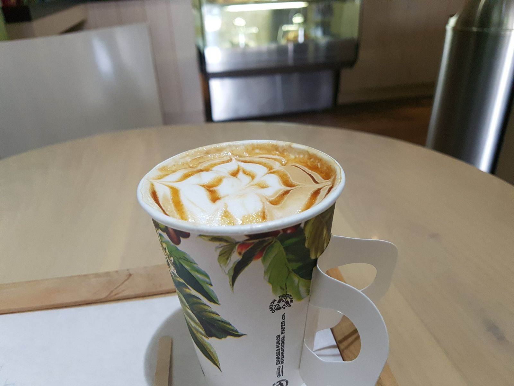

South America · Colombia · Salento
Salento, December 12 and 13, 2017
After Guatapé I went on to Salento, a small town in the coffee region of Colombia, in the department of Quindío. I think I got there by way of Medellín. I have photos from two days: a short trek between coffee farms on December 12, and a walk in the Cocora Valley, with its very tall wax palms, on December 13.
In short: two days on foot, the first among coffee farms and the second in the Cocora Valley. I do not remember where I slept, how long the trip took, or what it cost. I have no photos from December 11, so I do not know on which day I arrived.
The times are my phone's clock, and Google Photos stores them in Colombian time (GMT-5). The boxes hold research I did in November 2026, each with a source, so you can tell it apart from what I remember.
Getting here
I think I went from Guatapé back to Medellín by bus, and from Medellín to Salento by minibus. I am not sure of either, and I do not remember the companies, the departure points, the prices or how long the rides took.
What I found: a ticket-search page lists Medellín to Salento at about 176 km and 7 hours on average, a fare of about US$40, and 3 buses a day (busbud.com).
What I did not find: a date on that page. Its newest dated price entry is from January 2026, and it does not say whether you change buses in Armenia, so ask at the terminal before you plan around it.
December 12: a short trek between coffee farms
The photos from December 12 run from 15:19 to 16:01. They show a river valley, hillsides full of coffee bushes mixed with banana plants, and a wooden viewpoint with a railing. Google Photos puts the last one near Finca Ocaso Salento, in the Boquía area, close to the Mirador en las Manos de Dios. I did not write down the name of the farm or of the trail, and I do not know whether the farm takes visitors.


December 13: the Cocora Valley
On December 13 I have 13 photos of the Cocora Valley, a long valley with grass hills and very tall wax palms, a short ride from Salento. Google Photos puts one of the palm photos at the Cocora Valley viewpoint. I did not note how I got there, which trail I took, or whether I went in or out by the same path, and I did not time it. The first photos are from 10:02 and 10:25, and the others run from 12:58 to 14:00.





What I found: a guide published in August 2024 and updated on 24 October 2026 says shared Willys jeeps leave Salento's main square, take about 30 minutes, and cost about 5,000 to 6,000 pesos each way. It gives the full loop as 12 to 15 km and 5 to 6 hours, moderate. Trail fees are collected along the way, and a visit to the Acaime hummingbird reserve costs extra, about 20,000 pesos according to reports it cites (bucketlistly.blog). The guide's schedule details do not agree with each other. It gives the first jeep as about 6:30 and quotes a reader who says 6:10, and the opening as 8:00.
What I did not find: an official page with the fees and hours. Ask in Salento's main square for the last jeep back before you set out.
The coffee
I took two photos of coffee in a café in Salento, at 15:55 and 16:05 on December 13, and I show both. The name and details of the place are in the Coffee section of the Members page.


After Salento
I have no photos after 16:05 on December 13. I do not know when or how I left Salento, or where I went next.
What I do not remember
I do not remember where I slept, how I got from Guatapé to Medellín and on to Salento, what I paid for the buses, the jeep or the trails, or which path I took in the Cocora Valley. I took no notes. The photos give the two days in order, and nothing more.